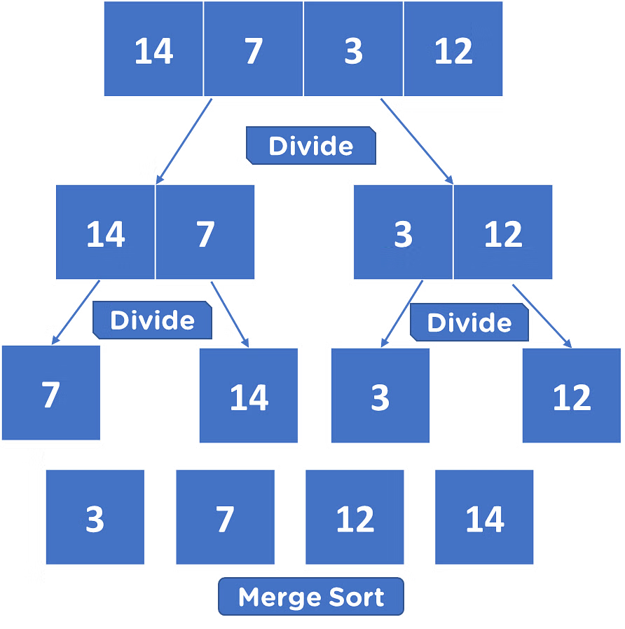

Analysis
Time Complexity
To understand the concept of Time and Space Complexity, imagine you're organizing a deck of cards.
1. Breaking the Deck in Half:
Imagine you keep splitting the deck of cards into two halves. The number of splits is log(n). The base of log is 2 in Computer Science.
2. Putting the Deck Back Together:
When you start putting the cards back together, the complexity becomes n * log(n). Hence, the time complexity of Merge Sort is O(n * log(n)).
Merge Sort Example
Space Complexity
For Merge Sort, the space complexity is O(n) because you need extra space to hold n cards temporarily.
Best, Average, and Worst Case Scenarios
Best Case Scenario
Even if the deck is sorted, Merge Sort still operates at O(n * log(n)) as splitting and merging still happens.
Average Case Scenario
In a random deck, Merge Sort also operates at O(n * log(n)), making it a consistent performer.
Worst Case Scenario
Even in the worst case (completely reversed deck), the time complexity remains O(n * log(n)).
Applications of Merge Sort
Merge Sort is widely used in various scenarios where its stability and consistent time complexity make it highly preferred.
1. Sorting Large Datasets
Merge Sort is ideal for sorting massive datasets, especially when the data can't fit into memory and needs to be accessed from external storage.
2. External Sorting
When dealing with huge datasets stored in external memory (such as on a disk), Merge Sort is preferred because it accesses data sequentially, which is faster for disk operations.
3. Inversion Counting
Merge Sort helps in counting inversions in an array, where an inversion is a pair of elements out of order.
4. TimSort in Programming Languages
A variation of Merge Sort, TimSort, is used in languages like Python, Java, Android, and Swift for sorting non-primitive types because of its stability.
5. Sorting Linked Lists
Merge Sort is preferred for sorting linked lists because of its non-contiguous memory usage.
6. Parallel Sorting
The independent sorting of subarrays makes Merge Sort easy to parallelize, which can greatly speed up sorting in multicore systems.
7. Union and Intersection of Arrays
Merge Sort's merge function is highly efficient for solving problems like finding the union or intersection of two sorted arrays.